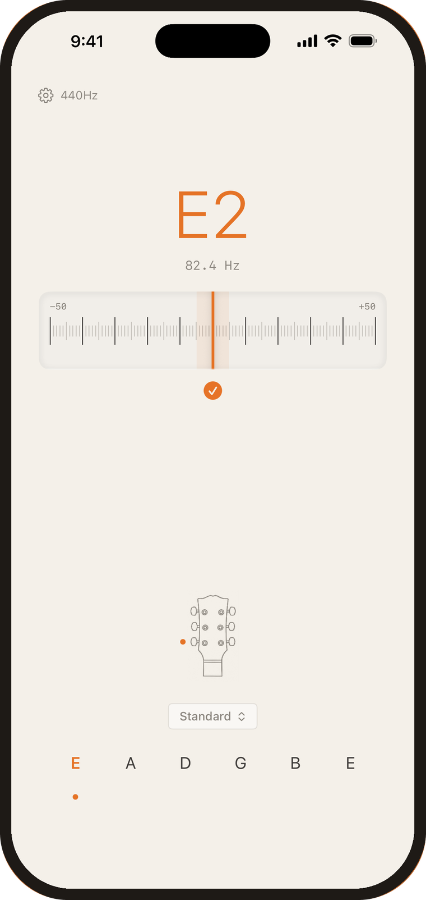
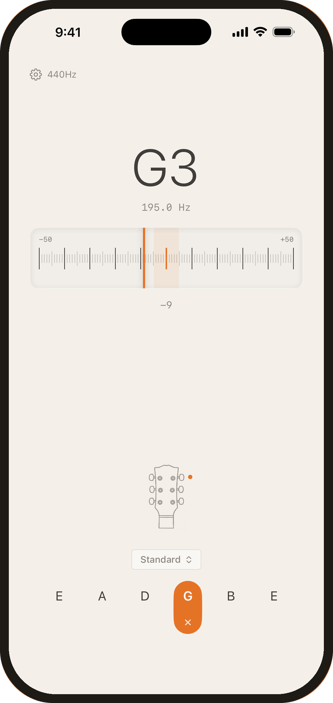
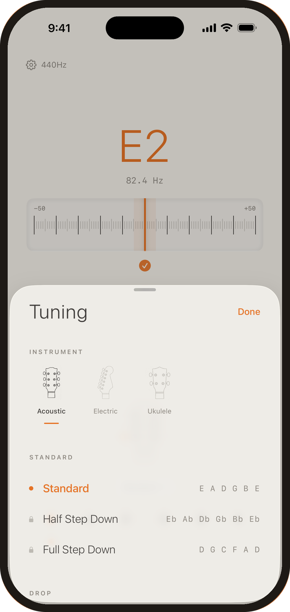
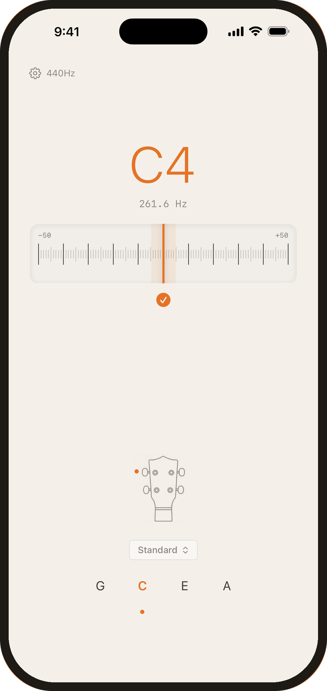
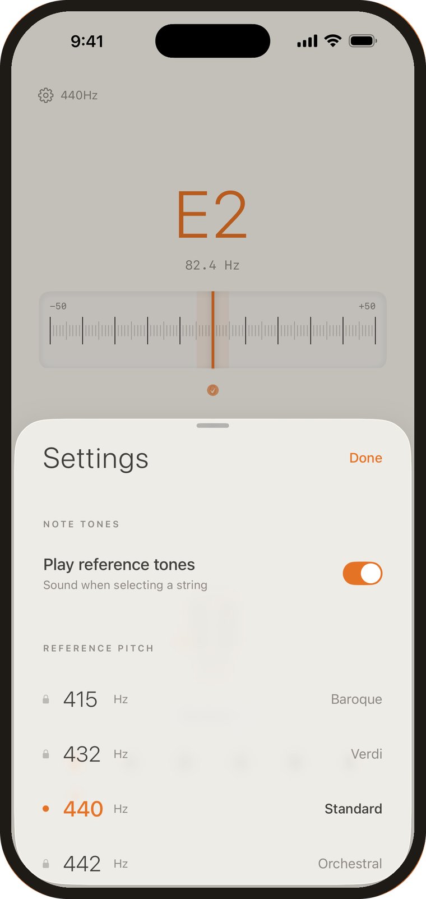

Guitar & ukulele tuner · iPhone
Dial
Play a string. Dial shows you which way to turn.
Built around one clear dial instead of a busy dashboard — a bold, easy to read note, an accurate needle, and no clutter.

Free to download. Standard tuning is free forever — no ads, no subscriptions.
Simply play to start.
Dial listens as soon as you play — there is nothing to press and nothing to set up. The note reads large, the needle settles fast, and a check mark tells you when you are there.
In a noisy room, tap a string to switch to manual mode. Dial then listens for that string alone and ignores everything else.


22 tunings.
Drop D, Open G, DADGAD, Nashville, New Standard — the ones people actually reach for, each with its own string layout drawn on the headstock.
Acoustic and electric guitar, and ukulele in standard, low G, baritone, D tuning and open C.
Ukulele too.
Not a guitar tuner with a ukulele mode bolted on. The headstock, the strings and the tunings all change with the instrument, so what you see matches what is in your hands.


415, 432, 440, 442 Hz.
Baroque, Verdi, standard and orchestral pitch, for playing with an ensemble or against a period recording.
Reference tones for every string are there as well, so you can tune by ear as readily as by eye.
Three turns of a peg.
Tuning is a small, frequent chore. Dial's whole design goal is to make it short enough that you stop noticing it.
Every tuning in Dial
Standard tuning is free on every instrument. One optional purchase unlocks the other twenty and the alternate reference pitches — buy it once and it stays yours.
Guitar
Ukulele
A tuner that gets out of the way.
Requires iOS 26 or later. Made with care by Apposite.